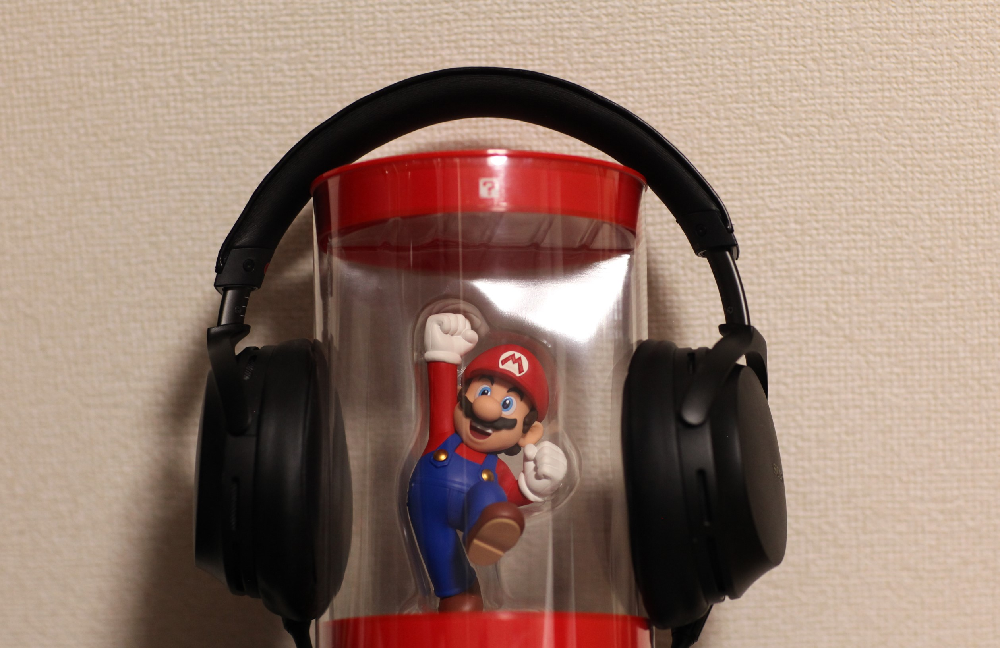

gohantabeta
自己紹介
初めまして！B1のごはんです！
大学入学以降かねてから興味のあったプログラミングに勤しみ、課題に終われる日々を送っています。
一番興味があるのはゲーム制作なのですが、ハッカソンなどに積極的に参加してWebに傾いたり、セキュリティイベントに参加してセキュリティにも傾いたりといろいろ楽しんでおります。
まだまだどの分野も初心者ですが、何卒よろしくお願いします。
使用技術
C/C++，C#，TypeScript，JavaScript
HTML，CSS
React，Node，Siv3D
Unity
＊いずれもハッカソン等で使用したことがある程度で初心者です
プログラミング以外の趣味
音楽を聴くのが好きです。
方向性は完全に雑食でヘビメタからクラシックまで基本的になんでも気に入って聴き惚れます。最近はLiveに行ってみたい、ハイレゾ音源を買いたい、いいイヤホンを買いたいと音楽系の欲にまみれています。
先日、親戚から立派な一眼レフを格安で譲り受け写真撮影にもハマりました。
最近は星空撮影に特別はまっていて、１～２週に１度ほどでカメラ片手に夜な夜な徘徊しています。


好きなもの
鳥
実家でオカメインコを飼っています。
実家のインコがあまりにも可愛いもので、共通点の多い鳥全般から可愛いところを探すのが得意になりました。
可愛いとこをみつけて毎日どんどん好きになって行ってます。
コーヒー
家で豆を挽いて様々な抽出方法で嗜み、１L/2日 ほど飲んでます。


経歴
福岡中央高校 普通科 卒
九州工業大学 情報工学部 在学